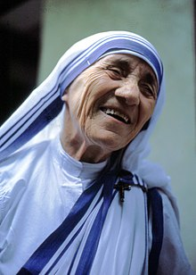

Mother Mary Teresa Bojaxhiu (26 August 1910 – 5 September 1997), honoured in the Catholic Church as Saint Teresa of Calcutta, was an Albanian-Indian Roman Catholic nun and missionary. She was born in Skopje (now the capital of North Macedonia), then part of the Kosovo Vilayet of the Ottoman Empire. After living in Skopje for eighteen years, she moved to Ireland and then to India, where she lived for most of her life.

In 1950, Teresa founded the Missionaries of Charity, a Roman Catholic religious congregation that had over 4,500 nuns and was active in 133 countries as of 2012. The congregation manages homes for people who are dying of HIV/AIDS, leprosy and tuberculosis. It also runs soup kitchens, dispensaries, mobile clinics, children's and family counselling programmes, as well as orphanages and schools. Members take vows of chastity, poverty, and obedience, and also profess a fourth vow – to give "wholehearted free service to the poorest of the poor."
Teresa received a number of honours, including the 1962 Ramon Magsaysay Peace Prize and the 1979 Nobel Peace Prize. She was canonised on 4 September 2016, and the anniversary of her death (5 September) is her feast day. A controversial figure during her life and after her death, Teresa was admired by many for her charitable work. She was praised and criticized on various counts, such as for her views on abortion and contraception, and was criticized for poor conditions in her houses for the dying. Her authorized biography was written by Navin Chawla and published in 1992, and she has been the subject of films and other books. On 6 September 2017, Teresa and St. Francis Xavier were named co-patrons of the Roman Catholic Archdiocese of Calcutta.